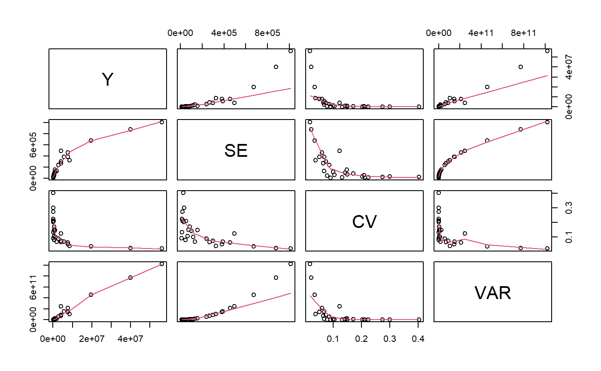

gvf.input.RdTransforms a set of computed survey statistics into a suitable (data.frame-like) data structure, in order to fit a Generalized Variance Function model.
gvf.input(design, ..., stats = list(...)) # S3 method for gvf.input plot(x, ...)
| design | The design object (of class |
|---|---|
| ... | For function |
| stats | A |
| x | The object of class |
Given a set of survey statistic objects (via arguments ‘...’ or stats) and a design object (design) from which those statics are supposed to have been derived, function gvf.input builds a data structure that can be fed to ReGenesees GVF model fitting function fit.gvf.
Argument ‘...’ can be bound to an arbitrary number of objects. These objects must be output of survey statistics functions, i.e. svystatTM, svystatR, svystatS, svystatSR, svystatB, svystatQ, svystatL, svySigma, and svySigma2.
All input objects passed to ‘...’ must derive from estimators of the same kind (as returned by function estimator.kind). For the same reason, objects of mixed kind (see estimator.kind) are not allowed. Since function svystatL can actually handle estimators of different kinds, objects of kind ‘Complex Estimator’ are the only exception to the rule.
Argument stats can be used as an alternative to argument ‘...’: one has only to store the survey statistic objects into a list and bind such list to stats. Note that, if both are passed, argument stats will prevail on ‘...’ (see ‘Examples’).
Should any input object be a survey statistic derived from a design object other than design, the function would raise an error.
The plot method for gvf.input objects produces a matrix of scatterplots with polynomial smoothers.
An object of class gvf.input, inheriting from class data.frame: basically a data frame supplied with appropriate attributes.
Each row of the data frame contains an estimate along with its estimated sampling error, expressed in terms of standard error, coefficient of variation, variance, and - whenever available - design effect.
The data frame has the following structure:
nameThe name of the original estimate, factor.
YThe value of the original estimate, numeric.
SEThe standard error of the original estimate, numeric.
CVThe coefficient of variation of the original estimate, numeric.
VARThe variance of the original estimate, numeric.
DEFFThe design effect of the original estimate (if available), numeric.
Note that by inspecting the attributes of a gvf.input object, one can always identify which design object and which kind of estimator generated that object (see ‘Examples’).
estimator.kind to assess what kind of estimates are stored inside a survey statistic object, svystat as a useful alternative to prepare the input for GVF model fitting, GVF.db to manage ReGenesees archive of registered GVF models, fit.gvf to fit GVF models, plot.gvf.fit to get diagnostic plots for fitted GVF models, drop.gvf.points to drop alleged outliers from a fitted GVF model and simultaneously refit it, and predictCV to predict CV values via fitted GVF models.
# Load sbs data: data(sbs) # Create a design object... sbsdes<-e.svydesign(data=sbs,ids=~id,strata=~strata,weights=~weight,fpc=~fpc) # ...and use it to compute some survey statistics: va<-svystatTM(sbsdes,~va.imp2) va.reg<-svystatTM(sbsdes,~va.imp2,~region) va.area<-svystatTM(sbsdes,~va.imp2,~area) # Now suppose you want to fit a GVF model on the estimates and errors computed # above: you must prepare your input as follows: ee<-gvf.input(sbsdes,va,va.reg,va.area) # Inspect the obtained data structure: ee#> name Y SE CV VAR #> 1 va.imp2 56293880.09 1011167.49 0.01796230 1.022460e+12 #> 2 North:va.imp2 40024018.87 878182.57 0.02194139 7.712046e+11 #> 3 Center:va.imp2 8664311.31 324914.02 0.03750027 1.055691e+11 #> 4 South:va.imp2 7605549.91 381688.29 0.05018550 1.456860e+11 #> 5 11:va.imp2 19676130.06 675015.62 0.03430632 4.556461e+11 #> 6 12:va.imp2 4154270.83 268571.62 0.06464952 7.213071e+10 #> 7 13:va.imp2 7559215.95 458784.00 0.06069201 2.104828e+11 #> 8 14:va.imp2 1172101.78 116567.07 0.09945132 1.358788e+10 #> 9 15:va.imp2 4058592.18 496491.73 0.12233102 2.465040e+11 #> 10 16:va.imp2 589516.48 46146.21 0.07827806 2.129472e+09 #> 11 17:va.imp2 1961458.41 132339.76 0.06747008 1.751381e+10 #> 12 21:va.imp2 492271.11 73943.48 0.15020885 5.467638e+09 #> 13 22:va.imp2 148638.82 30108.12 0.20255894 9.064990e+08 #> 14 23:va.imp2 125882.78 16611.29 0.13195840 2.759350e+08 #> 15 24:va.imp2 85940.47 18159.72 0.21130583 3.297755e+08 #> 16 31:va.imp2 4086071.44 298354.00 0.07301732 8.901511e+10 #> 17 32:va.imp2 2781773.81 240456.28 0.08643991 5.781922e+10 #> 18 33:va.imp2 1055307.50 155673.78 0.14751509 2.423433e+10 #> 19 34:va.imp2 5776831.62 389088.52 0.06735327 1.513899e+11 #> 20 41:va.imp2 499092.70 85159.34 0.17062829 7.252113e+09 #> 21 42:va.imp2 127847.21 11601.29 0.09074338 1.345899e+08 #> 22 43:va.imp2 114218.64 34182.20 0.29926987 1.168423e+09 #> 23 51:va.imp2 734492.92 103743.49 0.14124504 1.076271e+10 #> 24 52:va.imp2 628805.61 65170.80 0.10364221 4.247234e+09 #> 25 53:va.imp2 71104.66 15903.39 0.22366164 2.529177e+08 #> 26 61:va.imp2 253466.99 52830.99 0.20843341 2.791113e+09 #> 27 62:va.imp2 76083.79 20809.48 0.27350745 4.330346e+08 #> 28 63:va.imp2 64764.31 26085.19 0.40277104 6.804370e+08#> Classes ‘gvf.input’ and 'data.frame': 28 obs. of 5 variables: #> $ name: chr "va.imp2" "North:va.imp2" "Center:va.imp2" "South:va.imp2" ... #> $ Y : num 56293880 40024019 8664311 7605550 19676130 ... #> $ SE : num 1011167 878183 324914 381688 675016 ... #> $ CV : num 0.018 0.0219 0.0375 0.0502 0.0343 ... #> $ VAR : num 1.02e+12 7.71e+11 1.06e+11 1.46e+11 4.56e+11 ... #> - attr(*, "y.vars")= chr "va.imp2" #> - attr(*, "stats.kind")= chr "Total" #> - attr(*, "has.Deff")= logi FALSEplot(ee)# Note that, instead of argument '...', you could have used argument 'stats' # as follows: va.list<-list(va,va.reg,va.area) ee2<-gvf.input(sbsdes,stats=va.list) # ...obtaining exactly the same result: identical(ee,ee2)#> [1] TRUE# Note also that, if both are passed, argument 'stats' prevails on '...': # indeed, while: gvf.input(sbsdes,va.reg)#> name Y SE CV VAR #> 1 North:va.imp2 40024019 878182.6 0.02194139 771204626262 #> 2 Center:va.imp2 8664311 324914.0 0.03750027 105569121431 #> 3 South:va.imp2 7605550 381688.3 0.05018550 145685953633# we would get again: gvf.input(sbsdes,va.reg,stats=va.list)#> name Y SE CV VAR #> 1 va.imp2 56293880.09 1011167.49 0.01796230 1.022460e+12 #> 2 North:va.imp2 40024018.87 878182.57 0.02194139 7.712046e+11 #> 3 Center:va.imp2 8664311.31 324914.02 0.03750027 1.055691e+11 #> 4 South:va.imp2 7605549.91 381688.29 0.05018550 1.456860e+11 #> 5 11:va.imp2 19676130.06 675015.62 0.03430632 4.556461e+11 #> 6 12:va.imp2 4154270.83 268571.62 0.06464952 7.213071e+10 #> 7 13:va.imp2 7559215.95 458784.00 0.06069201 2.104828e+11 #> 8 14:va.imp2 1172101.78 116567.07 0.09945132 1.358788e+10 #> 9 15:va.imp2 4058592.18 496491.73 0.12233102 2.465040e+11 #> 10 16:va.imp2 589516.48 46146.21 0.07827806 2.129472e+09 #> 11 17:va.imp2 1961458.41 132339.76 0.06747008 1.751381e+10 #> 12 21:va.imp2 492271.11 73943.48 0.15020885 5.467638e+09 #> 13 22:va.imp2 148638.82 30108.12 0.20255894 9.064990e+08 #> 14 23:va.imp2 125882.78 16611.29 0.13195840 2.759350e+08 #> 15 24:va.imp2 85940.47 18159.72 0.21130583 3.297755e+08 #> 16 31:va.imp2 4086071.44 298354.00 0.07301732 8.901511e+10 #> 17 32:va.imp2 2781773.81 240456.28 0.08643991 5.781922e+10 #> 18 33:va.imp2 1055307.50 155673.78 0.14751509 2.423433e+10 #> 19 34:va.imp2 5776831.62 389088.52 0.06735327 1.513899e+11 #> 20 41:va.imp2 499092.70 85159.34 0.17062829 7.252113e+09 #> 21 42:va.imp2 127847.21 11601.29 0.09074338 1.345899e+08 #> 22 43:va.imp2 114218.64 34182.20 0.29926987 1.168423e+09 #> 23 51:va.imp2 734492.92 103743.49 0.14124504 1.076271e+10 #> 24 52:va.imp2 628805.61 65170.80 0.10364221 4.247234e+09 #> 25 53:va.imp2 71104.66 15903.39 0.22366164 2.529177e+08 #> 26 61:va.imp2 253466.99 52830.99 0.20843341 2.791113e+09 #> 27 62:va.imp2 76083.79 20809.48 0.27350745 4.330346e+08 #> 28 63:va.imp2 64764.31 26085.19 0.40277104 6.804370e+08